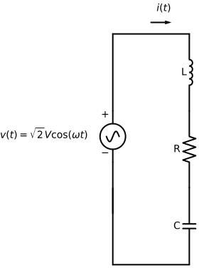
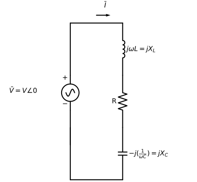
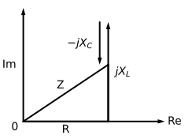

Basic represantations#
Knowing the angular freqency, \(\omega\), a phasor can be re-transformed into the time-domain.
Phasors lets us convert differential equations into algebraic equations using complex variables.
To calculate the current in the figure below it is solved in the time-domain using differential equations:
\[ Ri(t) + L\frac{di}{dt} +\frac{1}{C}\int i(t) dt = \sqrt{2} V cos(\omega t)\]
import schemdraw
import schemdraw.elements as elm
with schemdraw.Drawing() as d:
# --- LEFT SIDE ---
d += elm.Line().up(2)
d += elm.SourceSin().up().length(2)
d += elm.Line().up(0)
# Save top-left position
top_left = d.here
# --- TOP WIRE ---
d += elm.Line().right(3)
# --- RIGHT SIDE (direct continuation — THIS fixes alignment) ---
d += elm.Inductor().down().label('L')
d += elm.Resistor().down().label('R')
d += elm.Capacitor().down().label('C')
# --- BOTTOM WIRE ---
d += elm.Line().left(3)
# --- CLOSE LOOP ---
d += elm.Line().up()
# --- CURRENT ARROW (placed AFTER geometry) ---
d += elm.Arrow().at((top_left[0] + 1.5, top_left[1] + 0.45)).right().length(0.8)
d += elm.Label().at((top_left[0] + 1.9, top_left[1] + 0.9)).label(r'$i(t)$')
# --- SOURCE LABELS ---
d += elm.Label().at((-2.8, 3)).label(r'$v(t)=\sqrt{2}V\cos(\omega t)$')
d += elm.Label().at((-0.4, 3.75)).label('+')
d += elm.Label().at((-0.4, 2.25)).label('−')
d.draw()

Phasor convertions#
We can redraw the circuit using phasors; the inductance L is represented by \(j\omega L\) and capacitance C by \(j(\frac{1}{-\omega C})\)
\[ R + jX_L - jX_C\]
import schemdraw
import schemdraw.elements as elm
with schemdraw.Drawing() as d:
# --- LEFT SIDE ---
d += elm.Line().up(2)
d += elm.SourceSin().up().length(2)
d += elm.Line().up(0)
# Save top-left position
top_left = d.here
# --- TOP WIRE ---
d += elm.Line().right(3)
# --- RIGHT SIDE (direct continuation — THIS fixes alignment) ---
d += elm.Inductor().down().label(r'$j\omega L = jX_L$', loc='bottom')
d += elm.Resistor().down().label('R')
d += elm.Capacitor().down().label(r'$-j (\frac{1}{\omega C}) = jX_C$', loc='bottom')
# --- BOTTOM WIRE ---
d += elm.Line().left(3)
# --- CLOSE LOOP ---
d += elm.Line().up()
# --- CURRENT ARROW (placed AFTER geometry) ---
d += elm.Arrow().at((top_left[0] + 1.5, top_left[1] + 0.45)).right().length(0.8)
d += elm.Label().at((top_left[0] + 1.9, top_left[1] + 0.9)).label(r'$\bar{I}$')
# --- SOURCE LABELS ---
d += elm.Label().at((-2.8, 3)).label(r'$\bar{V}= V\angle0$')
d += elm.Label().at((-0.4, 3.75)).label('+')
d += elm.Label().at((-0.4, 2.25)).label('−')
d.draw()

Impedance triangle#
The impedance triangle illustrates the effect of inductance and capacitance on the impedance
import schemdraw
import schemdraw.elements as elm
with schemdraw.Drawing() as d:
origin = (0, 0)
R = 3
XL = 3.5 # full inductive height
XC = 1.5 # capacitive subtraction
X = XL - XC # net (Z height)
# --- Axes ---
d += elm.Arrow().at(origin).right(5).label('Re', loc='right')
d += elm.Arrow().at(origin).up(4).label('Im', loc='top')
d += elm.Label().at((-0.2, -0.3)).label('0')
# --- Base (R) ---
d += elm.Line().at(origin).right(R).label('R', loc='bottom')
# --- Z vertical (net reactance) ---
d += elm.Line().up(X)
z_tip = d.here # (R, X)
# --- Hypotenuse ---
d += elm.Line().to(origin).label('Z', loc='top')
# --- jXL (goes ABOVE Z tip) ---
d += elm.Arrow().at((R, 0)).up(XL).label(r'$jX_L$', loc='bottom')
offset = 0.3 # small horizontal shift to the left
d += elm.Arrow().at((R - offset, XL)).down(XC).label(r'$-jX_C$', loc='top')
d.draw()
